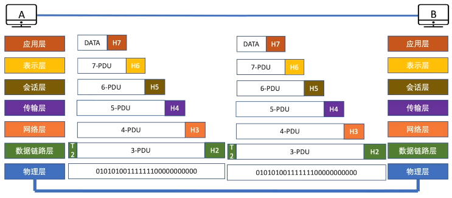
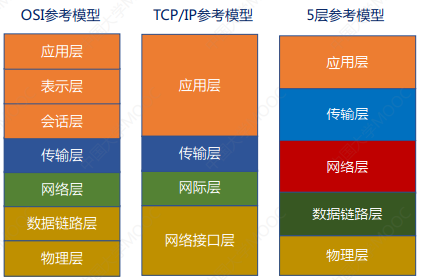

1.计算机网络定义、组成、功能
计算机网络：利用通信线路和交换设备将地理位置分散的、具有独立功能的多台计算机连接起来，按照某种协议进行数据通信、实现资源共享的信息系统。
功能：数据通信、资源共享
资源共享：软件、硬件、数据
因特网的发展：阿帕网→三级结构→多层次ISP结构
2.计算机网络分类
- 按分布范围分：广域网WAN、城域网MAN、局域网LAN、个域网PAN
- 按使用者分：公用网、专用网
- 按拓扑结构分：总线型、星型、环形、网状型、树状型
- 按数据交换技术分：电路交换、报文交换、分组交换
3.数据交换方式：电路交换、报文交换、分组交换
电路交换：在数据传输期间，源结点与目的结点之间有一条由中间结点构成的专用物理链接线路，在数据传输结束之前，这条线路一直保持。独占资源
报文交换（存储转发方式）：无需在两个站点之间建立一条专用通路，其数据传输的单位是报文。报文是网络中交换与传输的数据单元，即站点一次性要发送的数据块。
分组交换（存储转发方式）：分组交换与报文交换的工作方式基本相同，都采用存储转发方式，形式上的主要差别在于，分组交换网中要限制所传输的数据单位的长度，一般选128B。
- 数据报方式：数据报方式为网络层提供无连接服务。发送方可随时发送分组，网络中的结点可随时接受分组
- 虚电报方式：一条源主机到目的主机类似于电路的路径（逻辑连接），路径上所有结点都要维持这条虚电路的建立，都维持一张虚电路表
数据交换方式的选择：
- 传送数据量大，且传送时间远大于呼叫时，选择电路交换。电路交换传输时延最小。
- 当端到端的通路有很多段的链路组成时，采用分组交换传送数据较为合适。
- 从信道利用率上看，报文交换和分组交换优于电路交换，其中分组交换比报文交换的时延小，尤其适合于计算机之间的突发式的数据通信。
4.分层体系结构
实体：第n层中的活动元素称为n层实体。同一层的实体叫对等实体。
协议：为进行网络中的对等实体数据交换而建立的规则、标准或约定称为网络协议。【水平】
- 语法：规定传输数据的格式
- 语义：规定所要完成的功能
- 同步：规定各种操作的顺序
接口（访问服务点SAP）：上层使用下层服务入口。
服务：下层为相邻上层提供功能调用。【垂直】
七层结构：物联网淑惠试用

- 应用层：所有能和用户交互产生网络流量的程序。
- 表示层：用于处理在两个通信系统中交换信息的表示方式（语法和语义）。主要功能：数据格式变换、数据加密解密、数据压缩和恢复。
- 会话层：向表示层/用户进程提供建立连接并在连接上有序地传输数据。这是会话，也是建立同步（SYN）。主要功能：建立、管理、终止会话；使用校验点可使会话在通信失效时从校验点/同步点继续恢复通信，实现数据同步。适用于传输大文件。
- 传输层：负责主机中两个进程的通信，即端到端的通信。传输单位是报文段或用户数据报。端到端连接提供流量控制、差错控制、服务质量、数据传输管理等服务。主要功能：可靠传输、不可靠传输；差错控制；流量控制：速度匹不匹配问题；复用分用。
- 网络层：主要任务是把分组从源端传到目的端，为分组交换网上的不同主机提供通信服务。主要功能：路由控制；流量控制；差错控制；拥塞控制；
- 数据链路层：主要任务是把网络层传下来的数据报组装成帧。主要功能：成帧（定义帧的开始和结束）；差错控制：帧错+位错；流量控制；访问（接入）控制：控制对信道的访问
- 物理层：主要任务是在物理媒体上实现比特流的透明传输。
TCP/IP参考模型

- OSI定义三点：服务、协议、接口
- OSI先出现，参考模型先于协议发明，不偏向特定协议
- TCP/IP设计之初就考虑到异构网互联问题，将IP 作为重要层次
- TCP/IP 一开始就对面向连接服务和无连接服务并重，而 OSI 在开始时只强调面向连接这一种服务
- 面向连接与无连接
- 面向连接分为三个阶段，第一是建立连接，在此阶段，发出一个建立连接的请求。只有在连接成功建立后，才能开始数据传输，这是第二阶段。接着，当数据传输完毕，必须释放连接。
- 面向无连接没有这么多阶段，它直接进行数据传输。